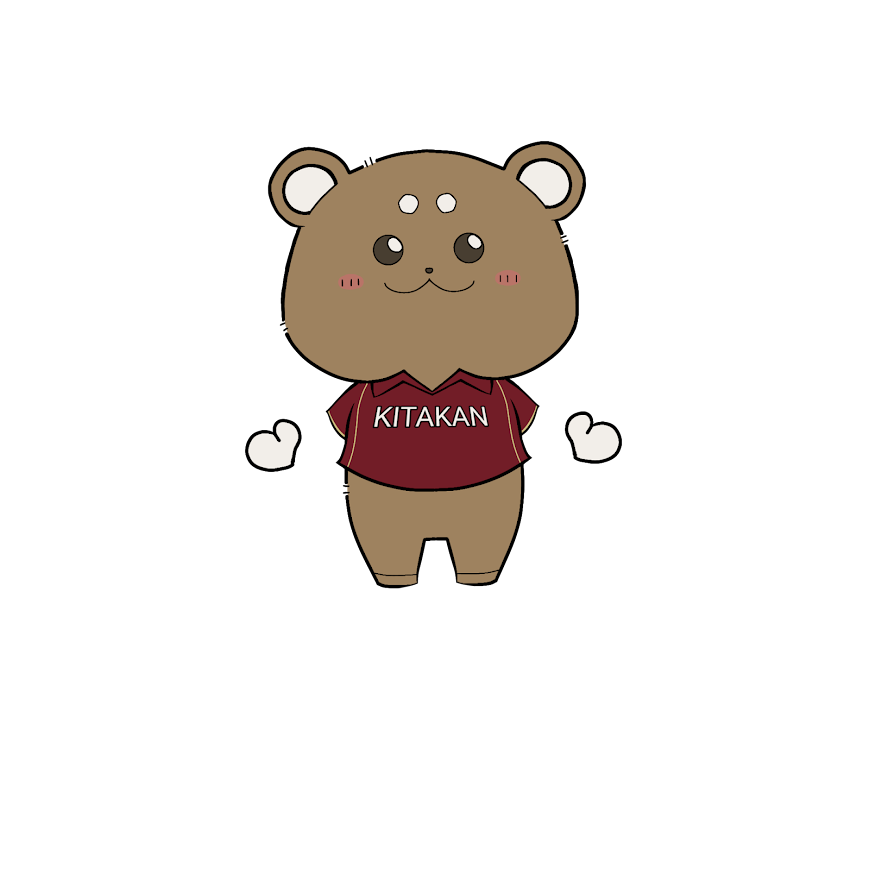
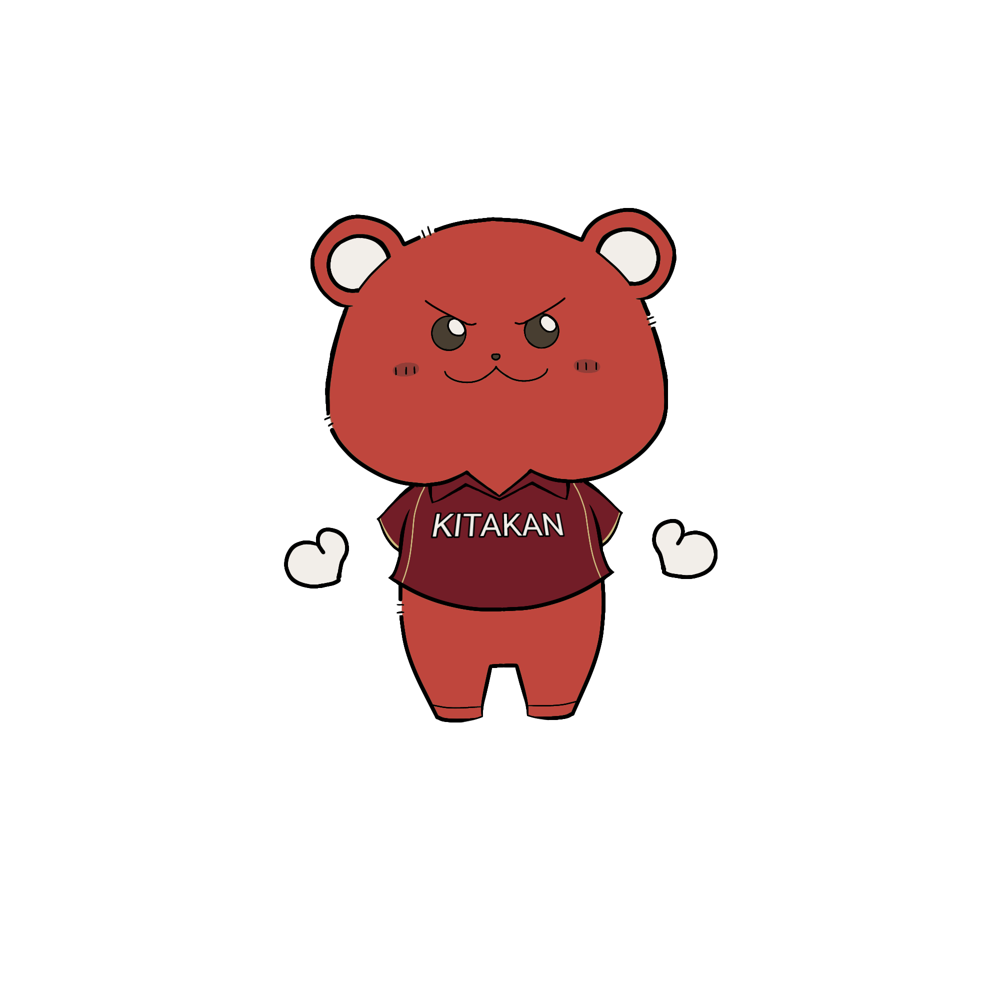
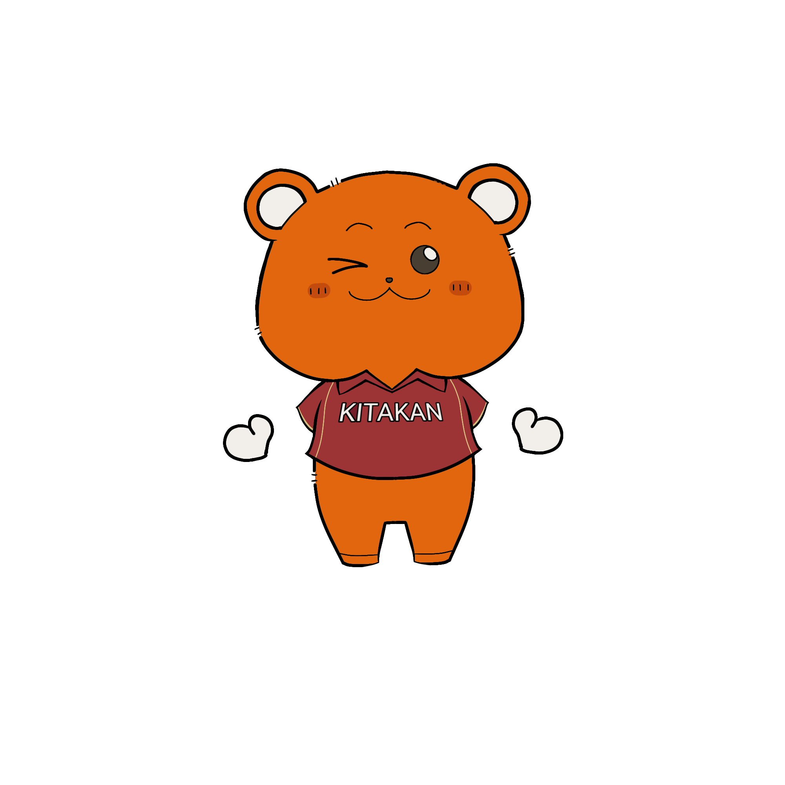
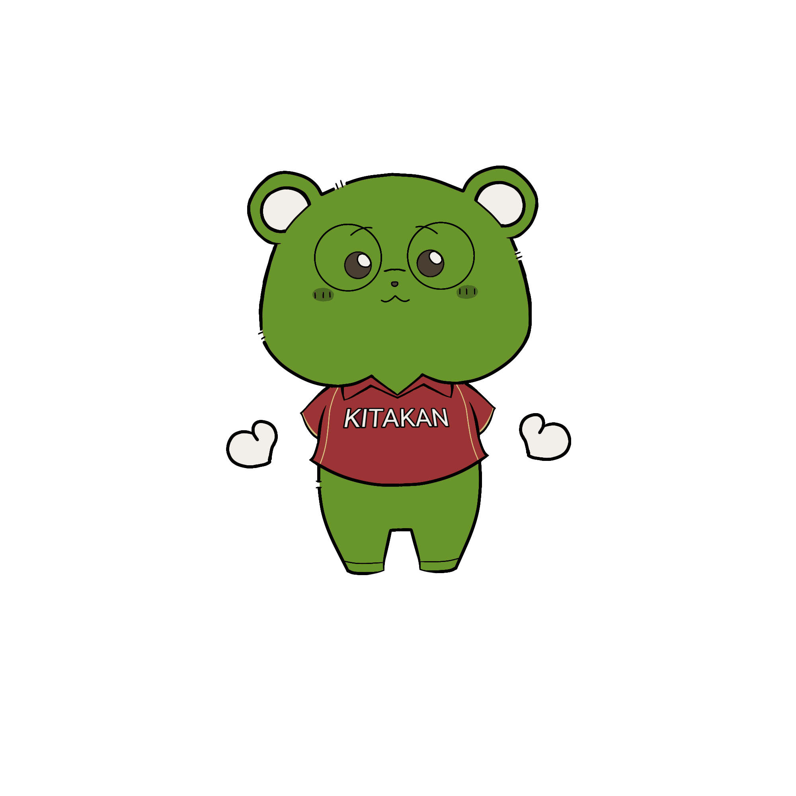
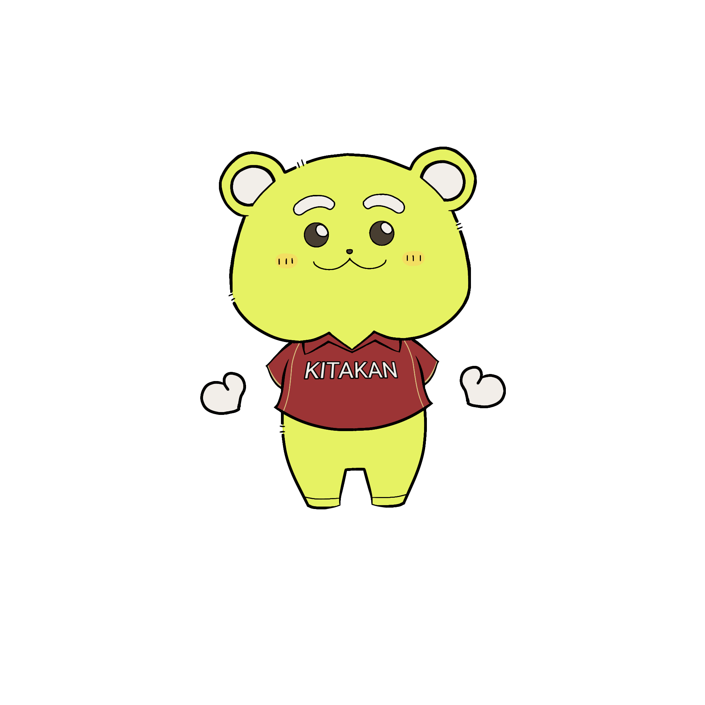
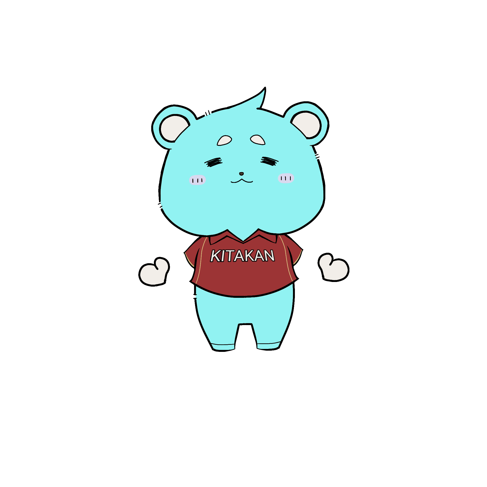

CHARACTER
きたくまちゃんの部屋
キャラクター紹介
「2025 わかもの in 北関」を盛り上げる、6体のキャラクターたち。
それぞれの個性や役割をのぞいてみよう！

？？？
きたくまちゃん
当日のお楽しみ。イベントのどこかで会えるかも…？
- 役割
- 全体の調整・スケジュール管理・当日サポート
- 性格
- しっかり者だけど、ちょっとドジな一面もある。
- 好きなもの
- チェックリスト、きれいなノート、あったかい飲み物。
- ひとこと
- 「みんなが安心して楽しめるように、ぜんぶ準備しておくね！」

総務担当
そうむちゃん
みんなの「困った！」をそっと支える、頼れるまとめ役。
- 役割
- 全体の調整・スケジュール管理・当日サポート
- 性格
- しっかり者だけど、ちょっとドジな一面もある。
- 好きなもの
- チェックリスト、きれいなノート、あったかい飲み物。
- ひとこと
- 「みんなが安心して楽しめるように、ぜんぶ準備しておくね！」

フェス担当
ふぇすちゃん
ステージと音楽がだいすきな、にぎやか担当。
- 役割
- フェスティバルの企画・進行・盛り上げ係
- 性格
- 明るく元気！ でも本番前はちょっとだけ緊張する。
- 好きなもの
- スポットライト、拍手、みんなの笑顔。
- ひとこと
- 「いっしょに、いちばんのフェスにしよー！！！」

合宿担当
がっしゅくん
夜のおしゃべりと、みんなで過ごす時間がだいすき。
- 役割
- 合宿の企画・運営・夜の見守り係
- 性格
- おっとりしていて話しやすい、聞き役タイプ。
- 好きなもの
- 星空、焚き火、みんなとの「ないしょ話」。
- ひとこと
- 「夜もふくめて、まるごと全部、たのしもうね。」

広報担当
こ～ほ～ちゃん
「たのしい」を、ちゃんとみんなに届けたい！ 発信のプロ。
- 役割
- SNS・チラシ・ホームページの情報発信
- 性格
- マイペースだけど、好きなことには全力。
- 好きなもの
- カメラ、スタンプ、いいね！ とリポスト。
- ひとこと
- 「#わかもの北関 で、感想たくさん教えてね！」

協力隊
きょうりょくさん
「手伝うよ」が口ぐせの、縁の下の力持ち。
- 役割
- 当日の全体サポート・困りごと相談・お手伝い全般
- 性格
- やさしくて、相手をよく見て動けるタイプ。
- 好きなもの
- 「ありがとう」の言葉と、みんなのほっとした顔。
- ひとこと
- 「なにかあったら、すぐ呼んでね。すぐ行くから！」